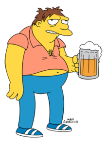

In what concerns the continuous evaluation solving exercises grade during the semester, you should submit until 23:59 of
(this exercise will still be available for submission after that deadline, but without counting towards your grade)
[to understand the context of this problem, you should read the class #05 exercise sheet]
In this problem you should submit a function as described. Inside the function do not print anything that was not asked!
The name of the .py source file you submit to Mooshak should NOT start with a digit (you will get an error if you submit it like that).

One late night at Moe's Tavern, Barney Gumble, Springfield’s most enthusiastic (and perpetually inebriated) patron, finds himself in a philosophical mood. He starts wondering about the world through his "drunken perspective". Everything seems a bit mixed up and jumbled, and, to him, that actually feels kind of... fun!As he stares at a list of drink specials Moe has written up on the wall, Barney thinks it would be hilarious if the list got "drunk" too - where every pair of items in it is swapped around, just like his wobbly view of the world. He laughs to himself, imagining a world where things are always out of order, and decides to create something to capture that feeling.
Write a function swap_list(lst) that given a list lst swaps all consecutive pairs of elements. For instance, [1,2,3,4] should become [2,1,4,3]. If the list as an odd number of elements, the last element should stay at its position, as it cannot swap with any other element.
The following limits are guaranteed in all the test cases that will be given to your program:
| 0 ≤ |lst| ≤ 100 | Number of elements in list |
| Example Function Calls | Example Output |
|---|---|
lst1 = ['a','b','c','d','e','f'] swap_list(lst1) print(lst1) lst2 = [1,2,3,4,5,6,7,8,9] swap_list(lst2) print(lst2) |
['b', 'a', 'd', 'c', 'f', 'e'] [2, 1, 4, 3, 6, 5, 8, 7, 9] |
Content by Pedro Ribeiro and Bernardo Portela (DCC/FCUP), migrated from dcc.fc.up.pt/~pribeiro/aulas/ip2526/problems/ip048.html.